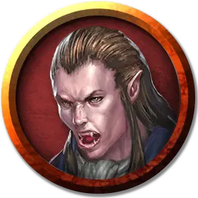

Вампир заклинатель
Vampire Spellcaster
Средняя Нежить (Перевертыш), законно-злая

Класс Доспеха 16 (природный доспех)
Хиты 144 (17к8 + 68)
Скорость 30 футов
| мод | спас | ||
|---|---|---|---|
| СИЛ | 18 | +4 | +4 |
| ЛОВ | 18 | +4 | +9 |
| ТЕЛ | 18 | +4 | +4 |
| мод | спас | ||
|---|---|---|---|
| ИНТ | 17 | +3 | +3 |
| МДР | 15 | +2 | +7 |
| ХАР | 18 | +4 | +9 |
Навыки Восприятие +7, Скрытность +9
Сопротивление урону некротическая энергия; дробящий, колющий, рубящий от немагических атак
Чувства тёмное зрение 120 футов, пассивное Восприятие 17
Языки все, известные при жизни
Опасность 15 (13000 опыта)
Бонус мастерства +5
Среда обитания Город
Особенности
Перевертыш. Если вампир не находится под солнечным светом и не стоит в текущей воде, он может действием превратиться в Крошечную летучую мышь или Среднее облако тумана, или же принять свой истинный облик.
Находясь в облике летучей мыши, вампир не может говорить, его скорость ходьбы равна 5 футам, и у него скорость полёта 30 футов. Вся его статистика за исключением размера и скорости остается той же самой. Все, что он носит, превращается вместе с ним, а то, что он несет — нет. Он принимает свой истинный облик, если умирает.
Находясь в облике тумана, вампир не может совершать действий, говорить и манипулировать предметами. Он ничего не весит, обладает скоростью полёта 20 футов, может парить и может входить в пространство враждебных существ и останавливаться там. Кроме того, если через некое пространство может проходить воздух, то это же может сделать и туман, без протискивания, хотя и не может проходить сквозь воду. Он совершает с преимуществом спасброски Силы, Ловкости и Телосложения, и обладает иммунитетом к немагическому урону, за исключением урона, который он получает от солнечного света.
Использование заклинаний. Вампир является заклинателем 9-го уровня. Его базовой характеристикой является Интеллект (Сл спасброска от заклинания 16, +8 к попаданию атаками заклинаниями). У него подготовлены следующие заклинания волшебника:
• Заговоры (неограниченно): волшебная рука [mage hand], луч холода [ray of frost], фокусы [prestidigitation]
• 1 уровень (4 ячейки): понимание языков [comprehend languages], туманное облако [fog cloud], усыпление [sleep]
• 2 уровень (3 ячейки): обнаружение мыслей [detect thoughts], отражения [mirror image], порыв ветра [gust of wind]
• 3 уровень (3 ячейки): восставший труп [animate dead], необнаружимость [nondetection], проклятие [bestow curse]
• 4 уровень (3 ячейки): высшая невидимость [greater invisibility], усыхание [blight]
• 5 уровень (1 ячейка): подчинение личности [dominate person]
Легендарное сопротивление (3/день). Если вампир проваливает спасбросок, он может вместо этого сделать спасбросок успешным.
Туманный побег. Если хиты вампира опускаются до 0 за пределами места отдыха, он вместо того, чтобы потерять сознание, превращается в туманное облако (как сказано в описании особенности Перевертыш), при условии, что он не находится под солнечными лучами или в текущей воде. Если он не может превратиться, он уничтожается.
Пока у вампира в туманном облике 0 хитов, он не может возвращаться в облик вампира, и обязан вернуться в место отдыха в течение 2 часов, иначе будет уничтожен. Достигнув места отдыха, он принимает облик вампира. После этого он становится парализованным, пока не восстановит хотя бы 1 хит. Проведя 1 час в месте отдыха с 0 хитов, он восстанавливает 1 хит.
Регенерация. Вампир восстанавливает 20 хитов в начале своего хода, если у него есть хотя бы 1 хит, и он не находится ни под солнечными лучами ни в текущей воде. Если вампир получает урон излучением или урон от святой воды, эта особенность не действует в начале следующего хода вампира.
Паучье лазание. Вампир может лазать по сложным поверхностям, включая потолки, без совершения проверок характеристик.
Слабости вампира. Вампир обладает следующими слабостями:
• Запрет. Вампир не может войти в жилище без приглашения одного из обитателей.
• Урон от текущей воды. Вампир получает урон кислотой 20, если оканчивает ход в текущей воде.
• Кол в сердце. Если колющее оружие, изготовленное из дерева, вонзить в сердце вампира, пока он недееспособен в своем месте отдыха, вампир станет парализованным, пока кол не вынут.
• Гиперчувствительность к солнечному свету. Вампир получает урон излучением 20, если начинает ход под солнечным светом. Находясь на солнечном свету, он совершает с помехой броски атаки и проверки характеристик.
Действия
Мультиатака (только в облике вампира). Вампир совершает две атаки, только одна из которых может быть укусом.
Безоружный удар (только в облике вампира). Рукопашная атака оружием: +9 к попаданию, досягаемость 5 футов, одно существо. Попадание: Дробящий урон 8 (1к8 + 4). Вместо причинения урона вампир может схватить цель (Сл высвобождения 18).
Укус (только в облике вампира или летучей мыши). Рукопашная атака оружием: +9 к попаданию, досягаемость 5 футов, одно согласное существо или существо, схваченное вампиром, недееспособное или опутанное. Попадание: Колющий урон 7 (1к6 + 4) плюс урон некротической энергией 10 (3к6). Максимум хитов цели уменьшается на количество, равное полученному урону некротической энергией, а вампир восстанавливает такое же количество хитов. Уменьшение хитов длится до тех пор, пока цель не окончит продолжительный отдых. Цель умирает, если этот эффект уменьшает максимум её хитов до 0. Гуманоид, убитый этим способом, а после закопанный в землю, восстает следующей ночью в качестве порождения вампира, находящегося под контролем вампира.
Очарование. Вампир нацеливается на одного гуманоида, которого видит в пределах 30 футов. Если цель видит вампира, она должна преуспеть в спасброске Мудрости Сл 17 от этой магии, иначе станет очарованной вампиром. Очарованная цель считает вампира верным другом, о котором нужно заботиться, и которого нужно защищать. Несмотря на то, что цель не находится под контролем вампира, она выполняет его просьбы и искренне прилагает все нужные усилия, и будет согласной целью для укуса вампира.
Каждый раз, когда вампир или спутники вампира делают цели что-нибудь плохое, цель может повторить спасбросок, оканчивая эффект на себе при успехе. В противном случае эффект длится 24 часа, пока вампир не будет уничтожен, пока вампир с целью не окажутся на разных планах существования, или пока вампир не окончит эффект бонусным действием.
Дети ночи (1/день). Вампир магическим образом призывает 2к4 роя крыс или летучих мышей, при условии, что на небе нет солнца. Находясь на открытом воздухе, вампир может вместо этого призвать 3к6 волков. Вызванные существа приходят через 1к4 раунда, действуют как союзники вампира и подчиняются его устным командам. Звери остаются на 1 час, пока вампир не умрет, или пока вампир не отпустит их бонусным действием.
Легендарные действия
Вампир может совершить 3 легендарных действия, выбирая из представленных ниже вариантов. За один раз можно использовать только одно легендарное действие, и только в конце хода другого существа. Вампир восстанавливает использованные легендарные действия в начале своего хода.
Перемещение. Вампир перемещается на расстояние, не превышающее его скорость, не провоцируя атаки.
Безоружный удар. Вампир совершает один безоружный удар.
Укус (стоит 2 действия). Вампир совершает одну атаку укусом.
Описание
Пробуждённые в бесконечной ночи вампиры жаждут жизни, которую они потеряли, и утоляют эту жажду, выпивая кровь живых. Вампиры ненавидят солнечный свет, поскольку его прикосновение жжет их. Они не отбрасывают ни теней, ни отражений, и всякий вампир, желающий ходить незамеченным среди живых, вынужден держаться в темноте и подальше от отражающих поверхностей.
См. дополнительно статью: "Бестиарий: Вампиры"